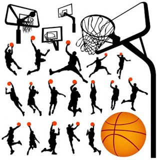

Reglas
Las reglas básicas del baloncesto fueron establecidas en 1891 por James Naismith y fueron actualizándose con el desarrollo del deporte. Entre las reglas actuales más representativas del baloncesto establecidas por la FIBA (Federación Internacional de Baloncesto) están: Juego: El balón puede lanzarse hacia cualquier dirección del campo de juego con una o ambas manos, antes de lanzar un balón a la cesta o hacer un pase a un compañero un jugador puede dar solo dos pasos sin bote y un equipo tiene 24 segundos para lanzar el balón a la canasta.
Puntaje: El equipo con mayor cantidad de puntos anotados al final del juego gana, cuando se anota desde cerca de la canasta vale dos puntos, cuando se anota desde larga distancia vale tres puntos, y cuando se anota de tiro libre vale un punto.
Tiempo: El entrenador puede sustituir a los jugadores de la cancha de manera ilimitada, el juego se para cada vez que el balón sale de la cancha o se comete alguna falta y en caso de empate se juegan cinco minutos de prórroga hasta que uno de los dos equipos anota.
Faltas: Las faltas personales se realizan cuando un jugador comete un movimiento ilegal hacia el oponente, un jugador es echado del campo de juego cuando comete cinco faltas personales.
Tabla de fundamentos
| FUNDAMENTOS TÉCNICOS DEL BALONCESTO | Algunos movimientos de un jugador de baloncesto se denominan como fundamentales, puesto que son sobre los que se basa todo el juego. Según un concepto estricto, los "fundamentos" son solamente cuatro: el bote, el pase, el tiro y los movimientos defensivos. |
|||
|---|---|---|---|---|
PASE |
Es la acción por la cual los jugadores de un mismo equipo intercambian el balón. | |||
Diferentes tipos de pase | De pecho: El más común, realizado sacando el balón desde la altura del pecho y llegar al receptor a la misma altura aproximadamente, en una trayectoria casi recta. | Pase indirecto: Al dar el pase se lanza el balón con la intención de que rebote antes de ser recibido para que sea más difícil cortarlo y más sencillo recibirlo. | Por encima de la cabeza: Se usa sobre todo por los pívots y al sacar un rebote, como el nombre indica se efectúa lanzando el balón desde encima de la cabeza fuertemente y con las dos manos. |
Pase de mano a mano: Se realiza cuando se tiene al compañero receptor muy cerca, de manera que recibe la pelota casi de manos del pasador. |
BOTE O DRIBLE |
Acción que consiste en que el jugador empuje el balón contra el suelo y este retorne a su mano, se destaca en velocidad: en carrera y con espacio por delante, el jugador lanza el balón hacia delante para correr con más velocidad. | |||
TIROS |
Bandeja o doble ritmo: Lanzamiento en carrera, con una sola mano, después de haber dado máximo dos pasos después de dejar de botar el balón. |
Tiro libre: Lanzamiento desde la línea de tiros libres, después de una falta personal o una falta técnica. |
Tiro en suspensión: Lanzamiento a canasta tras elevarse en el aire, apoyando el balón en una mano mientras se sujeta con la otra, finalizando el lanzamiento con un característico golpe de muñeca. |
Gancho: Lanzamiento con una única mano, en posición perpendicular al aro, con el brazo estirado, deslizando suavemente el balón. |
DEFENSA |
La defensa en baloncesto se realiza entre la persona que ataca y el aro, la posición defensiva consiste en flexionar ligeramente las rodillas y realizar desplazamientos laterales intentando robar el balón o evitando una acción de pase, tiro o intento de penetración a canasta por parte del rival. | |||
Tipos de defensa |
Defensa individual: Cada jugador marca a un oponente en concreto del equipo rival. |
Defensa en zonas: Cuando los jugadores que defienden no marcan uno a uno a sus oponentes de manera personal, se denomina que marcan en zona esperando a que lleguen los atacantes. |
Defensa mixta: Sería una combinación de los dos tipos de defensas expuestas anteriormente. |
Presión: Es una defensa especial que se realiza cuando el equipo defensor adelanta los jugadores al campo contrario para dificultar el saque o el paso del balón por parte del rival a su campo (el equipo atacante sólo tiene 8 segundos para pasar del propio campo al del rival). |